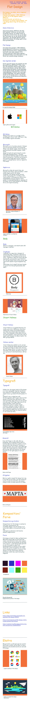
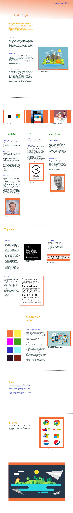
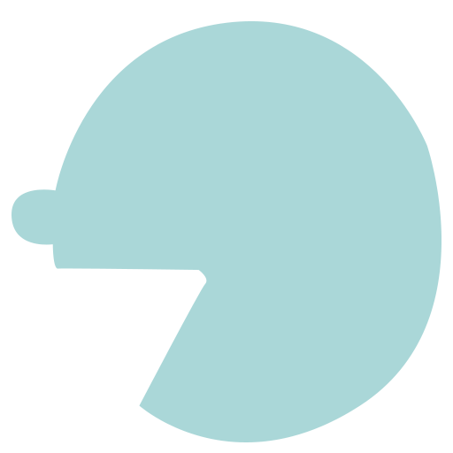

Mit første projekt på semesteret gik ud på at lave en hjemmeside om Flat design. Det første skridt i den proces var at lave et moodboard.
Efter research om emnet lavede jeg dette moodboard:
Derefter udarbejdede jeg et layout for hjemmesiden i mobil- og desktopversion
Jeg lavede dette layout til mobilversionen:
og dette til desktopversionen:
Dette fik jeg efterfølgende lavet i Brackets.
Udover at lave et layout designede jeg også et splashbillede og nogle ikoner.
Ideen bag mit splashbillede var, at da Flat design er en forholdsvis ny stilart og et design som nu bliver brugt flittigt, kunne dette blive illustreret af en masse personer, der snakker om det. Her er nogle skitser og screenshots af min udarbejdelse af splashbillederne.
Således ser mit ikon ud:
Både splashbillederne og ikonerne blev brugt til den endelige hjemmeside samt de blev uploadet på det tilhørende styletile.
I mit styletile står der at jeg bruger Unica One, som hovedoverskrift og Raleway regular som brødtekst og underoverskrifter. Derudover er der splashbilleder, ikoner samt disse farver:
Styletilen kan ses her:
Styletile til hjemmeside om Flat designNedenfor er processen hen mod den endelige hjemmeside om Flat design i links.
Link til den endelige hjemmeside om Flat design:
Endelige hjemmeside